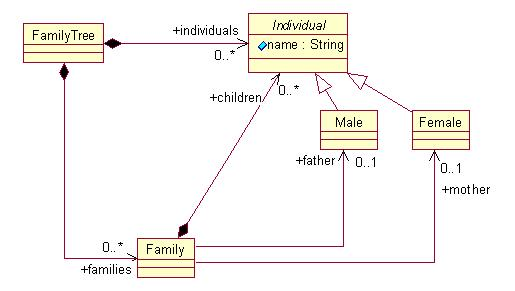
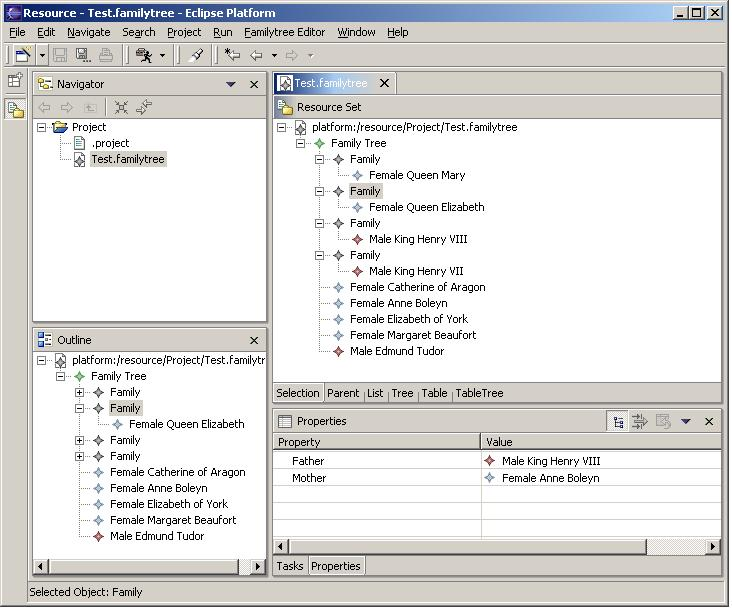
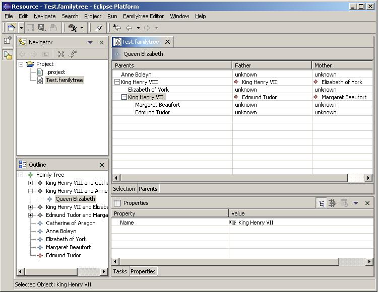

| Eclipse Corner Article |
Summary
This article introduces EMF, the Eclipse Modelling Framework, and will help you get started using EMF in your own Eclipse plug-ins.By Catherine Griffin, IBM
December 9, 2002 (revised May 2003 for EMF 1.1.0)
If you want to try the example from this article, you will need EMF and a suitable version of Eclipse (I am using 2.1). EMF version 1.1.0 Build 20030501_0612VL was used to generate the example code.

A FamilyTree contains families and individuals. Individuals are either Male or Female - Individual itself is an abstract class. A Family contains children and is linked to a mother and father.In addition to these types of relations, EMF will handle multi-valued references, two-way relationships (navigable both ways), enumerations and data types (Java objects which aren't EMF based, serialized as strings).
It is also possible to generate the model code from annotated Java interfaces. and that is what is described below. If you don't want to do any typing, just create a new Java project in Eclipse, import family1.zip, and skip to Step 3. Otherwise proceed as follows:
/** * Return the individuals name. * @return the name * @model **/ String getName();Again, the @model tag tells EMF that this method needs some code generated. If you add methods to the interface that don't have the @model tag, EMF will not generate implementations of those methods, so you will have to implement them yourself. Sometimes it makes sense to do this - for example, you might want to add some convenience methods to the model interfaces.
/** * Return the father * @return the father * @model **/Notice that the methodMale getFather(); /** * Return the mother * @return the mother * @model **/ Female getMother();
When instances of this model are created using the editor generated by EMF, there will be a single top-level FamilyTree object and all the other objects in the model will be contained by it, directly or indirectly. The model cannot be saved correctly if there are objects which have no container.
Add the following methods to FamilyTree to define its containment relations:
/** * Return a list of contained familiesUnlike the simple references defined in the previous section, these methods return Lists - thats because a FamilyTree can contain multiple Families and Individuals. The return type must be java.util.List or org.eclipse.emf.common.util.EList so that EMF recognizes that this is meant to be multi-valued. Notice the @model tag* @model type="Family" containment="true" **/ java.util.List getFamilies(); /** * Return a list of contained individuals * @model type="Individual" containment="true" **/ java.util.List getIndividuals();
There is one other containment relation to define, in Family:
/** * Return children * @return list of child Individuals * @model type="Individual" containment="true" **/ java.util.List getChildren();
Two new packages will be generated in your project, com.ibm.example.familytree.impl and com.ibm.example.familytree.util. If you look now at the original package com.ibm.example.familytree, you will find that two new interfaces called FamilytreeFactory and FamilytreePackage have appeared. These are used to programmatically create model elements and to query meta-data, respectively. At the same time as generating the model implementation, EMF has also made some changes to the other interfaces in this package. If you look at Family.java for example, you will see that the return type java.util.List has been changed to EList and that the interface now extends EObject. These changes are needed so that the generated model code works correctly.
To run the example editor, you need to start a runtime workbench, making sure that it will be launched with the three generated plug-ins. If you aren't sure how to do this, see the EMF tutorial.
Once the workbench has started, you need to create a model file:
Add a Female or Male to the FamilyTree. If the Properties view is showing, you should see the properties for the Individual - there is only one: name. Set the name to something meaningful, and the label in the tree view will change.
When you add children to a Family, they appear as child items in the tree. You can use the properties view to set the mother and father for a Family, but setting these doesn't change the tree, because mothers and fathers are linked to families, not contained by them.
This is what the editor looks like when I have put in some test data:

The test family tree shown here is in the file Test.familytree. This is an XMI file. By default, EMF uses XMI (a form of XML) to save model instance data. If you need to save your data in a different format, you can write code to do so.
You can drag and drop elements to move them, and cut, copy and paste, delete, undo and redo edit actions are supported.
The other pages of the editor are -
/** * Return a description. * @return a description * @model **/ String getDescription();Then to update the genmodel file, right-click on it to bring up the popup menu, and select Reload.... You will also need to regenerate all the generated code. If you make changes to the generated code, then remember to take out the @generated flag from the Javadoc so that your changes are not overwritten.
The generated editor is meant to be a starting point for your own development and a demonstration of the reusable user interfaces parts provided in EMF. Once you are satisfied that your model is how you want it to be, you can start customizing the generated editor, or writing your own.
If you change the getText method, remember to remove the @generated flag from the method javadoc comment so that your changes will be kept if you regenerate the code.
To change the icons, you can just change the gifs that are in the icons folder in this plug-in project.
In the customized version of the family tree .edit plug-in, the getText methods have been changed in FamilyItemProvider, IndividualItemProvider, FemaleItemProvider and MaleItemProvider. For example, here's the code from IndividualItemProvider:
public String getText(Object object) {
Individual individual = (Individual)object;
if( individual.getName() == null )
return "Unnamed individual";
return individual.getName();
}
You can create different tree views by writing your own content provider. However, make sure that you won't have the same element appearing twice in the tree as this will cause problems. The tree viewer assumes that each domain element maps to one tree item. If you need to show referenced elements in a tree, you will have to wrap them. Other structured viewers (tables and lists) behave the same way.
In the customized version of the family tree editor, I have changed the input of the content outline view so that the root of the tree is now FamilyTree instead of the resource (file), and changed the root and title of the selection tree view.
I have added the inner class ParentAdapterFactoryContentProvider in place of ReverseAdapterFactoryContentProvider. This returns the parents of a child as the tree 'children', resulting in a tree showing parents, grandparents, great-grandparents etc. Here's how the getChildren method is implemented:
public Object [] getChildren(Object object) {
Object parent = super.getParent(object);
if( parent instanceof Family ){
List parents = new ArrayList();
if( ((Family)parent).getMother() != null )
parents.add( ((Family)parent).getMother() );
if( ((Family)parent).getFather() != null )
parents.add( ((Family)parent).getFather() );
return parents.toArray();
}
return new Object[0];
}
You will also need to set up the table with the right columns; in the generated editor this is done in the createPages method.
The second page of the editor is now a table tree, using the content provider described above. It shows parents of children. I have defined three columns - Parents, Father and Mother. You can expand items in the first column to see parents of parents.
I modified IndividualItemProvider so that it implements ITableItemLabelProvider. The second column shows the individuals father, the third column their mother. Here's how the method getColumnText is implemented in IndividualItemProvider:
public String getColumnText(Object o, int index ){
if( index == 0 ){
return getText(o);
}
else{
Object f = getParent(o);
if( f instanceof Family ){
if( index == 1 && ((Family)f).getFather() != null ){
// father
return getText(((Family)f).getFather());
}
else if( index == 2 && ((Family)f).getMother() != null ){
// mother
return getText(((Family)f).getMother());
}
}
}
return "unknown";
}
Heres the customized version of the editor, showing the table tree:

The menu items New Child and New Sibling are somewhat confusing in this context, so I have changed the ActionBarContributor to just have the submenu Add New, with menu items Family, Male, Female.
For more information about EMF, see the EMF tutorial (in the Eclipse Help for EMF), documentation, and the EMF newsgroup (news://www.eclipse.org/eclipse.tools.emf).
Java and all Java-based trademarks and logos are trademarks or registered trademarks of Sun Microsystems, Inc. in the United States, other countries, or both.